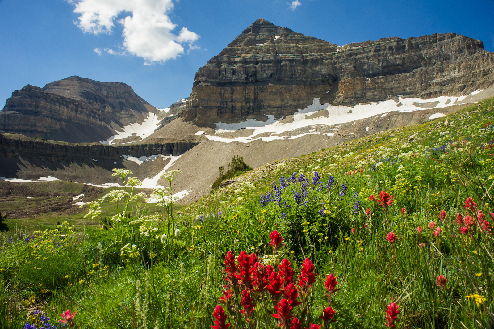

40˚ 26' 46.32" N
111˚ 37' 43.59" W
American Fork Canyon Utah
Summertime hikes & mt. Timpanogos
Mt. Timpanogos
Timpanooke & Aspen Grove Trails / 40˚ 26' 46.32"N, 111˚ 37' 43.59"W
A choice of trails provides a difference in experience and scenery, but each route yeilds no difference from the other regarding the 14 miles round trip to get the summit.
The trail starts out relatively flat after passing the Timpanogos Emergency Response Team (TERT) setup at the trailheads. Along either route, one eventually hits steep switchbacks for a ways until arriving into timpanogos basin on the Timpanooke route or emerald lakes via Aspen Grove.
Each route carries with it the chance for spotting wildlife. Along the Timp route, I've seen more moose from some distance in the flat areas concatinating bouts of steep ascent, and along the Aspen Grove route one has a chance to see the white mountain goats.
Silver Glance Lake
American Fork Canyon / 40˚ 26' 46.32"N, 111˚ 37' 43.59"W
Along the trail from Silver Flat Resivoir (7,800ft) to Silver lake (9,000ft), one will normally encounter a good number of people; however, whereas the trail to such is not as obvious, it is possible to keep going up to Silver Glance Lake at just about 10,000ft.

Driving up to Silver Flat Resivoir can be a bit rocky, but once one gets on foot hiking a bit and hits Silver Lake, the rocky trail can turn into snow easily well into June.